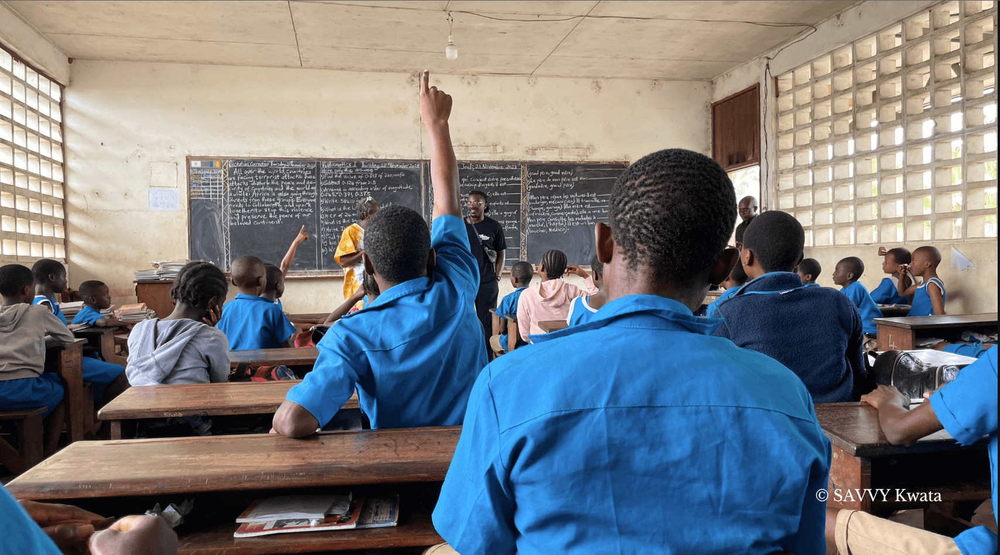

keyboard_backspace
ABOUT US

SAVVY Kwata is a multidisciplinary and multifunctional platform. It is at once, a library and a community space
as well as a place for the preservation and transmission of knowledge which is situated beyond the book. We are a
space for the published and the unpublished, the written, the spoken, the danced, sung, painted, sculpted and unrecorded.Â
SAVVY Kwata engages with these and the many other practices which serve as the nesting grounds of our hidden knowledge.
SAVVY Kwata engages with these and many
other mediums which serve as the nesting grounds of hidden ancestral knowledge and in pursuit of the preservation
of traditional practices around arts and crafts, culture, education and more broadly the cultural heritage of Cameroon,
and the African world at large
OUR TEAM / COMMUNITY

Ndoh Conrad Njuh, Ndongfack Edith Ndoping, Prescilia Tchingi, Ako Polycarp Enow Eyong Egbe, Carine Beri Nyuyki, Daniel Tanteh
Ndashi, SAVVY Contemporary team Berlin, SAVVY Book Club Bamenda team
BECOME A FRIEND

As a SAVVY Kwata friend you support the work and the independent programming of SAVVY Kwata
- a library, cultural centre and community space located in Limbe, but working across the entire Anglophone region of Cameroon.
Since 2020, SAVVY Kwata has, continuously and with limited but vital support, established a network of teachers, students, activists, artists,
labourers and traditional leaders to use decolonial pedagogical and artistic tools to engage our community at the grassroots level.
This work has taken place under extreme conditions of duress and as the Anglophone crisis moves into its eighth year in 2024, we need the support of our SAVVY Friends more than ever.
Grow our Library of Lost and Found
- A library of exclusively African books with a broad selection of Cameroonian authors.
Enable community sensitisation of the colonial roots of our current crisis through workshops, book clubs and other means of gathering
through pedagogy and the arts in the conflict-ridden North West Region.
- A library of exclusively African books with a broad selection of Cameroonian authors.
BECOME A PARTENER / COLLABORATOR
SAVVY Kwata is always looking for cultural organisations, institutions and people who are interested in collaborating.
Please contact us at Kwatalimbe@savvy-contemporary.com with any enquiries.
VISIT US
keyboard_backspace
north